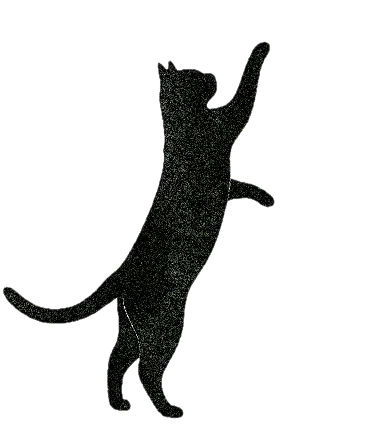

ESPACE LANGUES · UNIVERSITÉ SORBONNE PARIS NORD
IA générative et cours en ligne de l’Espace Langues
La langue au Chat
Ce site présente nos expérimentations avec l’IA générative dans les cours en ligne de l’Espace Langues de l’Université Sorbonne Paris Nord, de la conception à l’apprentissage : ce que nous avons essayé, les limites que nous percevons et les pistes que nous explorons.

Qui sommes-nous ?
L’équipe e-learning de l’Espace Langues
Université Sorbonne Paris Nord
- Julie LaporteResponsable e-learning de l’Espace Langues, enseignante d’anglais et conceptrice pédagogique multimédia
- Kenza Belhaj SoullamiEnseignante d’anglais et conceptrice pédagogique multimédia
- Katie DallingerEnseignante d’anglais et conceptrice pédagogique multimédia
Les 7 stations
Dans l’ordre ou dans le désordre- Choisissez une station
- Découvrez nos activités, limites et pistes
- Testez les prompts et relevez les défis
- Station 1
Interaction écrite
Une compétence difficile à entraîner en classe, et précieuse dans les cours hybrides ou 100% en ligne, où l’IAG offre un partenaire d’échange permanent.
Entrer dans la station - Station 2
Production orale
Pour pallier l’inhibition et le temps d’expression restreint en classe, le mode vocal des agents conversationnels peut proposer un espace d’entraînement supplémentaire. L’étudiant·e peut multiplier les essais et s’appuyer sur l’erreur pour progresser, sans la pression immédiate d’un échange avec une personne réelle.
Entrer dans la station - Station 3
Production écrite
En classe, le feedback sur l’écrit est souvent différé, partiel ou subjectif. L’IAG transforme cette dynamique en offrant un retour immédiat, détaillé et bienveillant : chaque brouillon devient une opportunité de s’entraîner, de s’auto-évaluer et de progresser. De plus, en comparant son travail aux productions textuelles ou visuelles de la machine, l’étudiant·e apprend à analyser, à rebondir et à perfectionner sa propre production.
Entrer dans la station - Station 4
(Se) former aux outils et encourager le regard critique
Apprendre à s’en servir, avec discernement.
Entrer dans la station - Station 5
Initiation à la recherche… en VO
La recherche académique en anglais est à portée de quelques prompts. L’enjeu n’est pas de produire vite mais d’apprendre à questionner, vérifier et critiquer ce que la machine propose.
Entrer dans la station - Station 6
Évaluation sommative
Peut-on encore évaluer le travail d’un·e étudiant·e ? La frontière entre production authentique et production augmentée s’est brouillée. Mais en adaptant nos critères, nous avons continué à évaluer les étudiant·e·s dans des cours asynchrones en ligne : à l’écrit, en valorisant le processus et l’esprit critique plutôt que le seul produit fini ; à l’oral, en misant sur le personnel, le créatif et le spontané.
Entrer dans la station - Station 7
Conception pédagogique
Parfois l’IAG accélère le travail ; parfois elle rend possible ce qui ne l’était pas auparavant ; parfois, elle nous fait même perdre du temps. Au fond, elle ne nous permet pas nécessairement de travailler moins : elle nous permet d’aller plus loin dans la créativité, la multimodalité et l’ambition pédagogique.
Entrer dans la station - Toutes stations
Catalogue des activités
Cherchez un mot, filtrez par station ou par type.
Ouvrir le catalogue Votre parcours
0 / 7 stations consultées
0 défi(s) relevé(s)
Les stations visitées et les défis cochés sont mémorisés uniquement sur cet appareil.
AI Assessment Scale (AIAS)
Face au défi de l’IA générative en langues, nous avons fait un choix pédagogique : situer la plupart de nos tâches au niveau AIAS 3 (collaboration ciblée) de l’échelle AI Assessment Scale. L’objectif ? Ne pas subir l’outil, ni l’interdire, mais apprendre à interagir et co-créer avec lui. À travers ces activités concrètes, l’étudiant·e utilise l’IAG comme un partenaire de feedback ou de création assistée, tout en développant le sens critique indispensable pour garder le contrôle de ses propres productions.
L’AIAS a d’abord été conçue pour l’évaluation, mais ses auteurs précisent que ses niveaux décrivent des types de tâches et qu’elle peut aussi structurer des activités d’apprentissage (Roe et al., 2025 (nouvel onglet)). C’est ainsi que nous l’utilisons : le niveau affiché sur une activité indique la place que la consigne laisse à l’IAG. Ce n’est ni une note ni une hiérarchie : aucun niveau ne vaut mieux qu’un autre. Les activités où l’étudiant·e n’utilise pas l’IAG, comme celles de la station Conception pédagogique, où c’est l’enseignant·e qui s’en sert, n’ont pas d’étiquette.
The AI Assessment Scale (AIAS) v2.1
| Level | Description |
|---|---|
| AIAS 1NO AI (padlock) | This task is completed in a controlled environment designed to exclude AI. Knowledge, understanding, and skills are demonstrated and assessed independently. |
| AIAS 2AI PLANNING | This task focuses on planning activities such as topic exploration, outlining, and initial research. AI may be used to support this process, and the quality of planning and idea development is assessed whether or not AI was used. |
| AIAS 3AI COLLABORATION | AI may be used to help complete this task, including idea generation, drafting, feedback, and refinement. It is designed so that AI alone will not reach the required standard. Assessment covers both the work itself and how AI outputs are evaluated, modified, and integrated. |
| AIAS 4FULL AI | There is an expectation of AI involvement in this task. The goal cannot be reached by AI or by a person working alone in the time available. Assessment focuses on the critical thinking and subject knowledge shown in directing AI. |
| AIAS 5AI EXPLORATION | This task is designed for creative AI use to solve problems, generate novel insights, or develop innovative solutions in the discipline. Approaches may be co-designed by students and instructors. |
 (CC BY-NC-SA 4.0, nouvel onglet)AI Assessment Scale (AIAS) v2.1 © 2026 Learning Innovation Practice Ltd. Based on the original AIAS by Perkins, Furze, Roe & MacVaugh. aiassessmentscale.com (nouvel onglet)
(CC BY-NC-SA 4.0, nouvel onglet)AI Assessment Scale (AIAS) v2.1 © 2026 Learning Innovation Practice Ltd. Based on the original AIAS by Perkins, Furze, Roe & MacVaugh. aiassessmentscale.com (nouvel onglet)
L’AIAS adaptée pour les cours e-learning de l’Espace Langues
| Niveau | Rôle de l’IAG | Usages |
|---|---|---|
| AIAS 1Sans IAG | L’IAG n’est pas utilisée pour réaliser la tâche.Hors épreuve surveillée, le niveau 1 est une consigne de travail, pas une garantie : seule la surveillance l’assure. C’est pour cela que l’AIAS d’origine marque ce niveau d’un cadenas. | Premier jet de production écrite sans IAG ni traducteur automatique ; premier jet oral enregistré sans IAG ; première recherche bibliographique sans IAG ; création de sa propre production après l’analyse critique de celle de l’IAG ; épreuve orale contrôlée en synchrone et présentiel ; activité de compréhension ou de production en temps limité. |
| AIAS 2IAG pour planifier et explorer | L’IAG intervient avant la réalisation, pour chercher des idées, organiser, faire émerger des pistes ou préparer une démarche. La réalisation principale reste indépendante. | Brainstorming pour une présentation ; exploration d’une problématique ; résumé d’un article avant de décider de le lire ; préparation d’un scénario, d’un projet ou d’une vidéo orale personnelle. |
| AIAS 3Collaboration ciblée ★ Le niveau de la plupart de nos tâches | L’IAG intervient dans certaines étapes précises : feedback, correction, comparaison, simulation, génération partielle ou création assistée. L’étudiant·e doit analyser et modifier les résultats. | Feedback sur une production ; comparaison entre son texte et celui de l’IAG ; correction optionnelle ; description d’image par prompting ; élaboration d’un CV ; simulation d’entretien ou de débat ; jeu de rôle oral avec IAG vocale ; discussion en anglais pour définir une question de recherche ; comparaison de sa recherche bibliographique avec celle d’un outil d’IAG ; traduction d’un abstract et de ses mots-clés, puis correction de la traduction ; analyse critique d’un flyer produit par l’IAG. |
| AIAS 4IAG intégrée à toute la tâche | L’IAG peut intervenir à presque toutes les étapes et l’étudiant·e la dirige comme un assistant : conception, rédaction, révision, mise en forme, production multimodale. Ce qui compte est son regard critique sur le résultat. | Résumés d’un article dans trois registres, comparés ; évaluation d’un article par l’IAG dans le rôle d’un pair-évaluateur ; paraphrases de plusieurs outils, comparées ; analyse d’un graphique ; texte humoristique généré par un prompt précis, puis critiqué ; génération d’un abstract à partir d’un article ; conception d’un diaporama ; préparation complète d’un oral avec script généré par l’IAG et prompteur autorisé. |
| AIAS 5Exploration créative de l’IAG | L’IAG devient un objet d’expérimentation : l’étudiant·e et l’enseignant·e explorent une forme nouvelle d’apprentissage ou de production. | Conception d’une activité inédite. |
Notre autre cadre de référence
Les 6 niveaux du CECRL
Le Cadre européen commun de référence pour les langues (CECRL) a été publié par le Conseil de l’Europe en 2001 et sert de repère commun pour décrire ce qu’une personne sait faire dans une langue. Il distingue six niveaux, regroupés par deux : A1 et A2 pour l’utilisateur élémentaire, B1 et B2 pour l’utilisateur indépendant, C1 et C2 pour l’utilisateur expérimenté. Nos cours, nos activités et les certifications que préparent nos étudiant·e·s, comme le DELF ou le CLES, s’appuient sur ces niveaux.
Utilisateur élémentaire
- A1DécouverteBreakthrough
- A2SurvieWaystage
Utilisateur indépendant
- B1SeuilThreshold
- B2AvancéVantage
Utilisateur expérimenté
- C1AutonomeEffective Operational Proficiency
- C2MaîtriseMastery
Source : Conseil de l’Europe (2001). Cadre européen commun de référence pour les langues : apprendre, enseigner, évaluer (nouvel onglet).